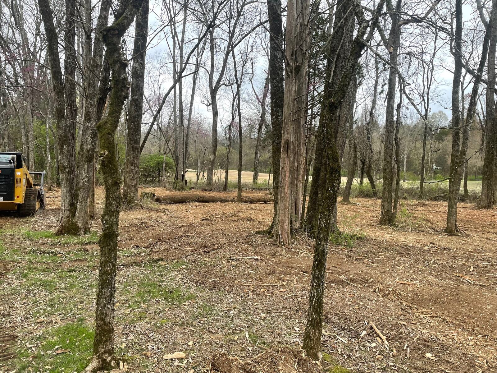

Performing a property transformation through land clearing services is a common technique when you want to build a new home or start an agricultural project. However, this is not a process where you should try to rely on your DIY skills. Whether you need a small section cleared for a garden or a large lot cleaned up for a commercial development, learn how land clearing enhances property value when you hire experienced professionals.
Steps Experts Take When Clearing Your Property
When you contact professionals about land clearing services available in eastern Tennessee, they’ll follow a series of steps before starting the work.
Providing a Price Quote
The first step for cleaning a parcel with the help of experts is requesting a price quote. After learning some information about the size of the area you need cleared, the density of the vegetation, and the plans you have for the space, they’ll give you a price quote.
If you accept the quote, the company should provide you with a written contract that explains the work and the timeline for completing it. If you agree to the terms, the work can begin on the agreed date.
Eliminating Overgrown Plants, Brush, and Trees
Professionals will use mulching machines, bulldozers, chainsaws, and other machinery to begin removing plants and trees on the property. Depending on the size of the space and the density of the vegetation, the work could take anywhere from a few hours to several days.
You’ll also choose how to handle the debris. The company can typically turn debris into mulch, haul it off site, or burn it.
Transformational Benefits Landowners Receive When Clearing Their Properties
Removing large, old trees, stubborn weeds, and thick brush has to be done properly to give your parcel a fresh start. Some of the benefits of hiring experienced professionals for transforming your property through land clearing services include the following.
Enhancing the Quality of the Soil
Through a technique called forestry mulching, land clearing experts use a machine that turns small trees, brush, and plants into mulch. It then leaves the mulch on the property.
By adding mulch, the soil will retain moisture. The natural mulch degrades over time, depositing nutrients in the soil that will help crops or grass grow on the newly cleared parcel.
Giving Crops and Grass Access to Better Sunlight
If you want to use the parcel for growing crops or as an area for livestock to graze, removing old trees can strengthen the pasture. Large trees may have blocked sunlight from reaching the property, leaving the grass weak and thinly populated.
If you’re planting a garden with crops that need full sun, eliminating large trees can provide this benefit.
Start Building Your Dream House
If you purchased an overgrown lot in a rural area with the idea of building a dream home, you’ll need to clear the space before construction can begin.
When you hire professionals to do land clearing, you can ask them to preserve certain trees to enhance the landscaping around the new home. Experts have the skill and expertise with heavy-duty machinery to carefully protect certain trees.
Unlocking the Full Value of the Parcel
Selling a lot that’s filled with dead trees and weeds can be a challenge. Potential buyers might struggle to see the value of the parcel because of the overgrowth.
Before placing the lot on the market, many people choose to clear it, making it easier for buyers to visualize what the lot can become when it is clean and prepared for construction.
Improving the Grading of the Soil
If your overgrown lot has low spots, they may collect water and allow mosquitoes to breed. Erosion might be problematic after thunderstorms. Professionals can grade the land at the same time they clear it, preserving topsoil and eliminating areas that collect water.
Removing Unwanted Pests and Noxious Weeds
Pests and insects might make their home on a parcel filled with old trees and thorny weeds. Clearing the vegetation from the property will force these pests to find a new place to live, making your land safer.
Even though local regulations in Tennessee rarely fine landowners for the presence of noxious weeds on their properties, your neighbors will appreciate your efforts to prevent them from spreading.
The Experts at The Yard Force Will Successfully Manage Your Property Transformation
Don’t assume that removing large trees and overgrown weeds is an easy weekend afternoon DIY project. By the time you find machinery to rent, learn to use it, and begin the work, you might be facing a multi-day project.
Instead, learn about the benefits of hiring land clearing specialists at The Yard Force. Our experts will transform your property with professional techniques that successfully prepare it for the next phase of your project. For a free price quote, call us today at (865) 290-8815. We serve eastern Tennessee from our base of operations in Knoxville.